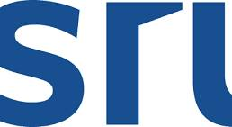

Hello SR
welcome to the expense tracking application! This platform is designed to help you manage your finances effectively and keep track of all your spending habits. Whether you're saving for a major purchase, budgeting for monthly expenses, or simply want to understand where your money goes, this tool provides comprehensive tracking and analysis features. Our expense tracker allows you to categorize your spending, set budget limits, and receive alerts when you exceed your thresholds. You can log daily expenses, attach receipts, and generate detailed reports to visualize your spending patterns over time. The intuitive dashboard displays your financial overview at a glance, showing total expenses, remaining budget, and spending trends. With advanced filtering options, you can search expenses by date range, category, or amount. The application supports multiple currency formats, making it suitable for international users. You can also export your data in various formats for further analysis or record-keeping purposes. Security is our priority, and all your financial data is encrypted and stored securely. You have full control over your information and can customize privacy settings according to your preferences. The mobile-responsive design ensures you can access your expenses from any device, whether desktop, tablet, or smartphone. Getting started is simple. Begin by adding your income sources and setting up budget categories that match your lifestyle. Then start logging your daily expenses as you make purchases. The system will automatically calculate totals, percentages, and provide insights into your spending behavior. Regular monitoring of your expenses helps identify unnecessary spending and opportunities to save money. This awareness is the first step toward financial freedom and achieving your long-term financial goals. Start today and take control of your finances with our comprehensive expense tracking solution
